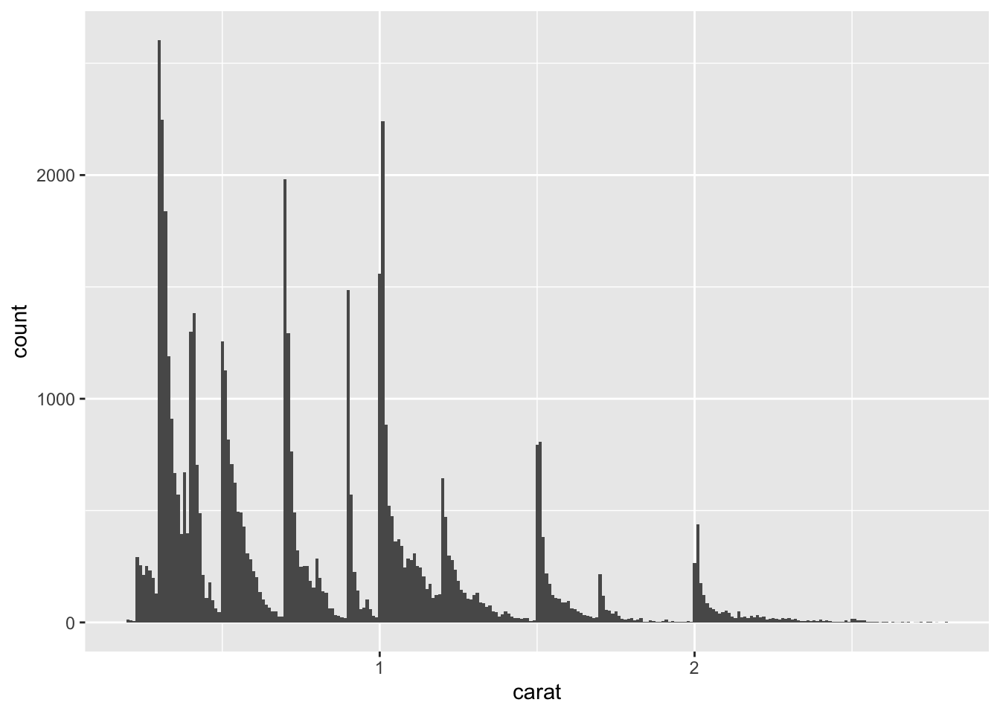

7.3.2 Typical values
- Tall bars, short bars, no bars
- Useful questions to ask
** Which values are the most common? Why?
** Which values are rare? Why? Does that match your expectations?
** Can you see any unusual patterns? What might explain them?
7.0.2.3 Example of interesting questions
Why are there more diamonds at whole carats and common fractions of carats?
Why are there more diamonds slightly to the right of each peak than there are slightly to the left of each peak?
Why are there no diamonds bigger than 3 carats?
